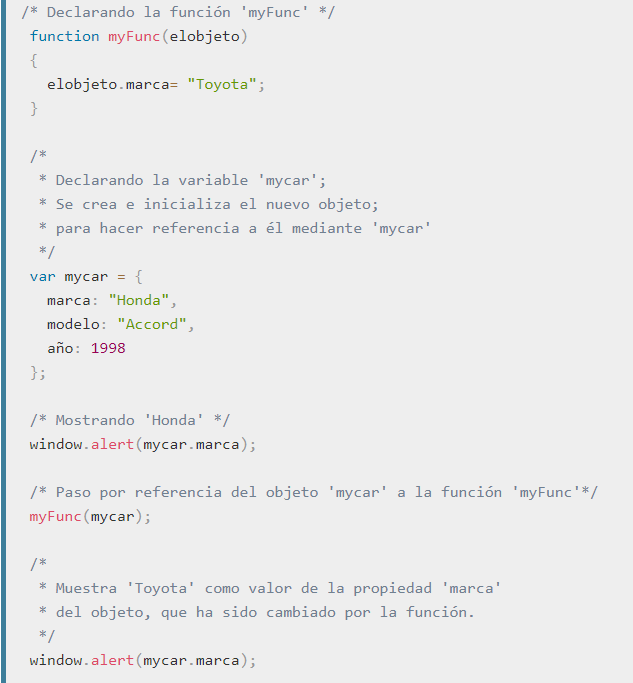
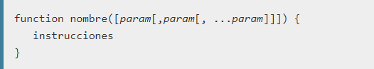
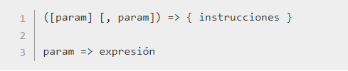

Mas de JavaScript

Las funciones son uno de los pilares fundamentales en JavaScript. Una función es un procedimiento en JavaScript—un conjunto de sentencias que realizan una tarea o calculan un valor. Para usar una función, debe definirla en algún lugar del ámbito desde el cual desea llamarla Toda función en JavaScript es un objeto Function. Ver Fun
Las funciones no son lo mismo que los procedimientos. Una función siempre devuelve un valor, pero un procedimiento, puede o no puede devolver un valor. Para devolver un valor especifico distinto del predeterminado, una función debe tener una sentencia return, que especifique el valor a devolver. Una función sin una instrucción return devolverá el valor predeterminado. En el caso de un constructor llamado con la palabra clave new, el valor predeterminado es el valor de su parametro. Para el resto de funciones, el valor predeterminado es undefined.
Los parámetros en la llamada a una función son los argumentos de la función. Los argumentos se pasan a las funciones por valor. Si la función cambia el valor de un argumento, este cambio no se refleja globalmente ni en la llamada de la función. Sin embargo, las referencias a objetos también son valores, y son especiales: si la función cambia las propiedades del objeto referenciado, ese cambio es visible fuera de la función.

La palabra clave this no hace referencia a la función que está ejecutandose actualmente, por lo que debes referirte a los objetos Function por nombre, incluso dentro del cuerpo de la función. Como alternativa, puedes utilizar la propiedad arguments. callee (que no se recomienda).

Las funciones son uno de los pilares fundamentales en JavaScript. Una función es un procedimiento en JavaScript—un conjunto de sentencias que realizan una tarea o calculan un valor. Para usar una función, debe definirla en algún lugar del ámbito desde el cual desea llamarla Toda función en JavaScript es un objeto Function.
Las funciones no son lo mismo que los procedimientos. Una función siempre devuelve un valor, pero un procedimiento, puede o no puede devolver un valor. Para devolver un valor especifico distinto del predeterminado, una función debe tener una sentencia return, que especifique el valor a devolver. Una función sin una instrucción return devolverá el valor predeterminado. En el caso de un constructor llamado con la palabra clave new, el valor predeterminado es el valor de su parametro. Para el resto de funciones, el valor predeterminado es undefined.
Los parámetros en la llamada a una función son los argumentos de la función. Los argumentos se pasan a las funciones por valor. Si la función cambia el valor de un argumento, este cambio no se refleja globalmente ni en la llamada de la función. Sin embargo, las referencias a objetos también son valores, y son especiales: si la función cambia las propiedades del objeto referenciado, ese cambio es visible fuera de la función.
hay varias formas de definir funciones : Hay una sintaxis especial para declarar funciones (ver la instrucción function para más detalles):
El nombre de la Funcion Param:El nombre de un argumento que se pasará a la función. Una función puede tener hasta 255 argumentos.

Las expresiones de función Flecha son una tecnología experimental, parte de la proposición Harmony (EcmaScript 6) y no son ampliamente implementadas por los navegadores.

PARAM:El nombre de un argumento. Si no hay argumentos se tiene que indicar con (). Para un único argumento no son necesarios los parentesis. (como foo => 1). INSTRUCCION Y EXPRECION:Multiples instrucciones deben ser encerradas entre llaves. Una única expresión no necesita llaves. La expresión es, así mismo, el valor de retorno implícito de esa función.
Como todos los demás objetos, los objetos Function se pueden crear mediante el operador new:
Nombres para ser utilizados por la función como nombres formales de argumento. Cada uno de ellos debe ser una cadena que corresponde a un identificador válido JavaScript o una lista de esas cadenas separadas por una coma; por ejemplo "x", "elValor", o "a,b".